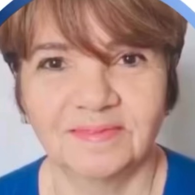
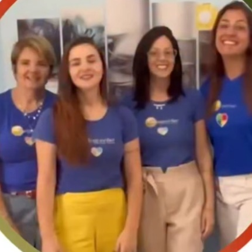

TDAH
Avaliação e acompanhamento especializado para questões de atenção, foco e regulação — nossa mais nova frente de cuidado, construída com o mesmo rigor clínico das demais divisões.
Grupo Despertar · São Paulo, SP
Há mais de dez anos unimos psicologia, neuropsicologia, fonoaudiologia e terapias complementares em um só lugar, com uma abordagem que nasceu de uma história real. Agora, com uma nova frente dedicada ao TDAH.
Divisão Infantil · Divisão Adulto · Divisão TEA · 3 unidades em São Paulo

Vânia Alencar
Neuropsicóloga & fundadora
Nossas divisões
Cada família chega até nós de um jeito diferente. Por isso, montamos um time multidisciplinar que conversa entre si — em vez de fazer você repetir a mesma história em consultórios isolados.
Avaliação e acompanhamento especializado para questões de atenção, foco e regulação — nossa mais nova frente de cuidado, construída com o mesmo rigor clínico das demais divisões.
Intervenção com metodologia ABA, musicoterapia e arteterapia, com orientação parental contínua.
Avaliações que traduzem o funcionamento único de cada mente em um plano de cuidado claro.
Escuta e brincar terapêutico para as primeiras infâncias e além.
Espaço de elaboração para as demandas emocionais da vida adulta.
Suporte à aprendizagem, em diálogo direto com escola e família.
Comunicação, fala e linguagem cuidadas em todas as fases do desenvolvimento.
Clareza para escolhas de carreira e trajetória profissional.
Cuidado nutricional integrado ao processo terapêutico.
Dançaterapia e arteterapia: o corpo e a arte como caminhos de autoconhecimento.
A origem
Em 2013, aos 14 anos, Cauê Alencar Zandarim foi diagnosticado com Encefalite Herpética. Sua mãe, a psicóloga Vânia Alencar, viveu na pele o que é atravessar diagnósticos, buscar respostas e não encontrar, pelo caminho, o cuidado integrado que a família precisava.
Foi dessa experiência — e da certeza de que nenhuma família deveria enfrentar isso sozinha — que nasceu um pequeno consultório em São Paulo. Um espaço pensado para reunir o que Vânia não encontrou: profissionais diferentes, dialogando entre si, em torno de uma mesma criança.
Hoje, mais de dez anos e três unidades depois, esse consultório se tornou o Grupo Despertar. O nome mudou de tamanho. O motivo segue sendo o mesmo do primeiro dia.
“Eu quis construir o lugar que procurei e não encontrei quando o Cauê mais precisou.” Vânia Alencar — Neuropsicóloga e fundadora
Impacto social
Nenhuma família deveria ficar de fora por não poder pagar.
O Projeto Cauê é o compromisso do Grupo Despertar em ampliar o acesso a diagnóstico e terapia de qualidade para famílias em vulnerabilidade financeira — reduzindo o custo do tratamento sem reduzir o cuidado. É a mesma solidariedade que moveu a origem da clínica, agora com nome, rosto e propósito próprios.

Quem cuida de você
Como funciona
Fale com a gente pelo WhatsApp ou pelo formulário abaixo.
Entendemos a história e as necessidades reais da família.
A equipe multidisciplinar desenha o cuidado sob medida.
Revisões periódicas e diálogo constante com vocês.
Quem já passou por aqui
“A gente sentiu, desde a primeira conversa, que não estava sozinho. Cada profissional já sabia da história da Stela — não precisamos repetir tudo de novo em cada sala.”
Mãe de paciente · Divisão Infantil
“O plano terapêutico do meu filho realmente conversa entre as áreas. Isso fez diferença no resultado, e no quanto a nossa família se sentiu acompanhada.”
Pai de paciente · Divisão TEA
“Cheguei sem saber nem por onde começar. Saí de lá com um caminho claro — e com gente em quem eu podia confiar.”
Paciente · Divisão Adulto
Despertar em pauta
Um guia inicial para famílias que estão começando a entender o tema.
Ler em breve →Estratégias simples para apoiar a criança fora do consultório.
Ler em breve →Conheça os detalhes da mais nova divisão do Grupo Despertar.
Ler em breve →Fale conosco
R. Dr. Argemiro Couto de Barros, 6 — Chácara Inglesa, São Paulo/SP
Seg–sex 7h30–20h · Sáb 7h30–12hR. Lord Clemente Atlle, 122 — sobreloja, salas 3, 4 e 5 — Chácara Inglesa, São Paulo/SP
Seg–sex 8h–21h · Sáb 8h–12hR. Dr. Argemiro Couto de Barros, 6 — Chácara Inglesa, São Paulo/SP
Seg–sex 8h–17h30